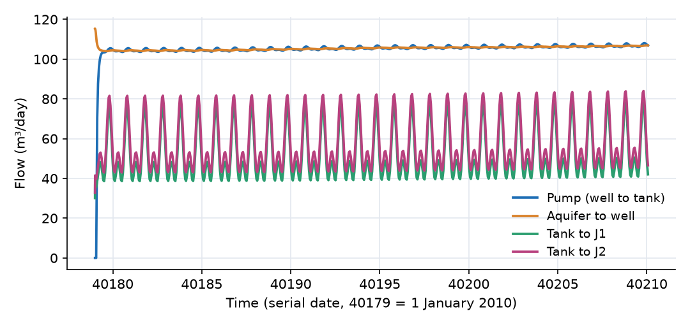
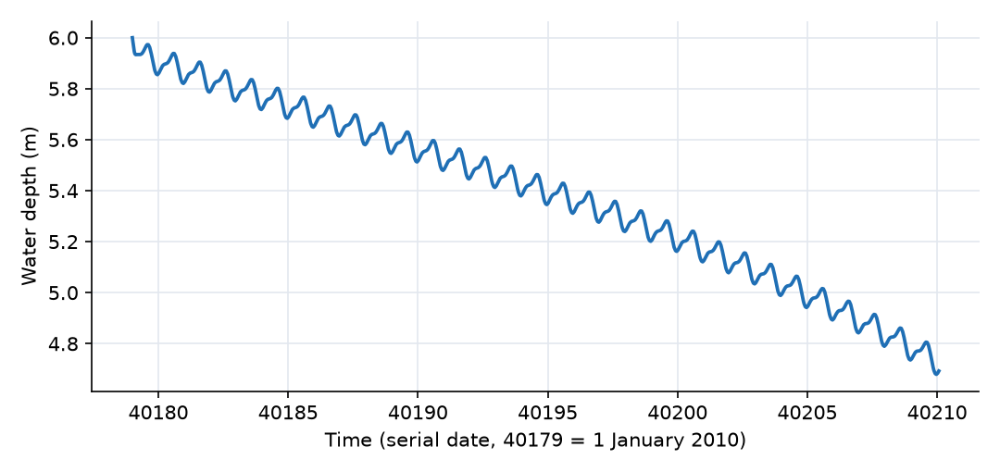
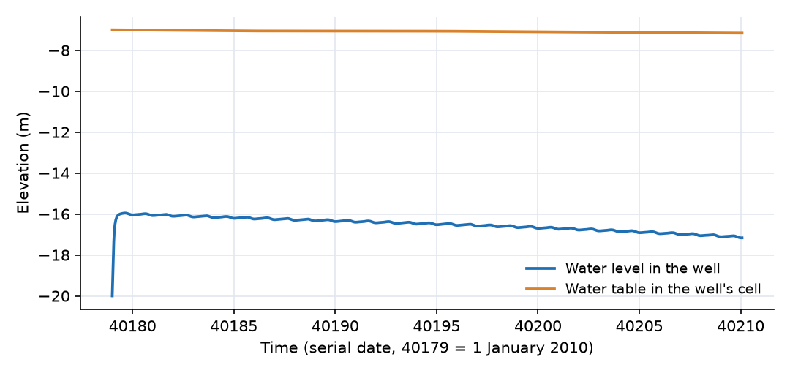
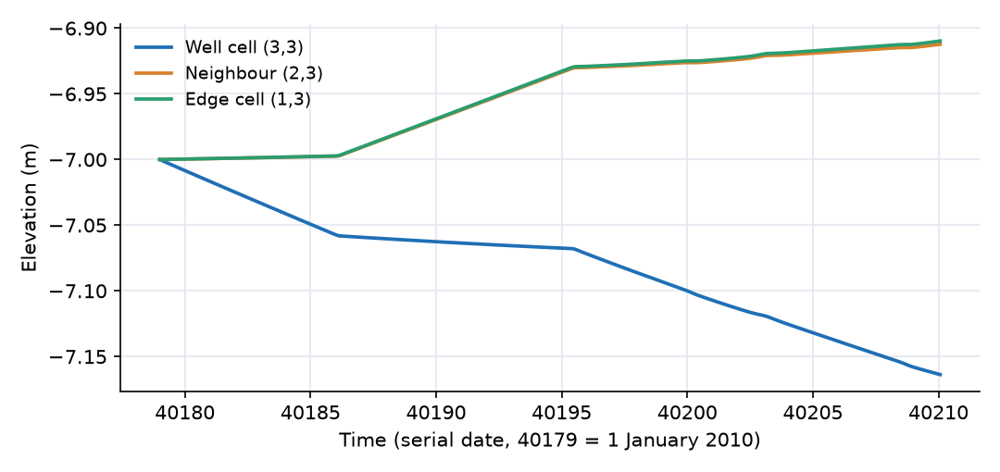
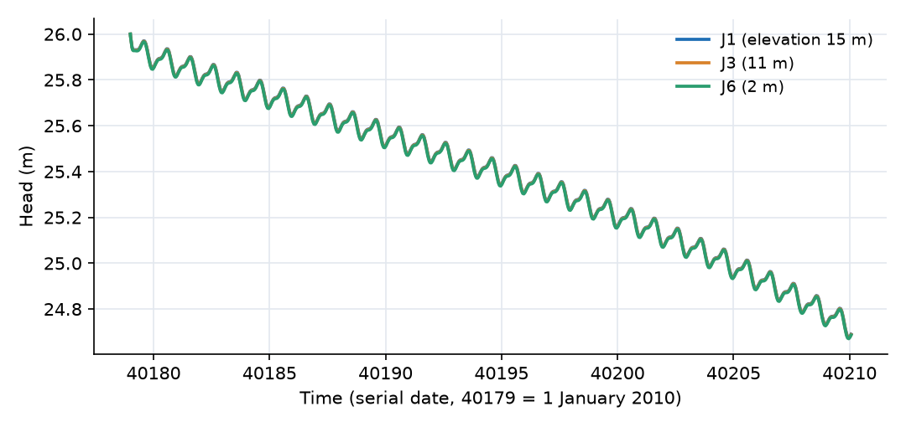

What this model represents
A small community draws its water from a single well. The well pumps groundwater into an elevated storage tank, and the tank supplies a looped network of pipes that delivers water to six groups of residential users. Demand follows a daily cycle with an evening peak; the pump runs continuously; the tank absorbs the difference.
Each part of this system limits the others. The aquifer controls how fast water can flow into the well. The pump's head-flow curve and the lift from the well to the tank set how much it delivers. The tank level sets the pressure in the network, and the users' demand drains the tank. Modelling them together answers questions that no single part can, such as whether the well can sustain the demand, how far the water table is drawn down, and what the pressures are at the far end of the network.
The model runs for January 2010 (31 days), with recharge from the 2010 Baltimore/Washington International Airport rainfall record.
How it works
The expressions below are from unconfined_groundwater.json and pipe_pump_tank.json.
Aquifer. The 25 Unconfined Groundwater cell blocks behave as in the 1D Unconfined Aquifer Between Two Rivers example. Each stores water through its specific yield, h = S/(S_y·A) + z_b, receives recharge R·A, and exchanges Dupuit flow with its neighbours:
Q = ½(K₁ + K₂) · (h₁ − h₂)/L · w · ½(b₁ + b₂)
where b = h − z_b is the saturated thickness. Each edge cell is connected to the regional aquifer (−7 m) by Q = K·(h − H_regional)/L·w·b, with L = 200 m.
Well. The well is a cylinder of diameter D = 2 m. Its water depth is d_w = 4S/(πD²) and its water level is h_w = z_b + d_w, with the bottom z_b = −20 m. Water enters from the aquifer cell through Well_inflow:
Q_well = π · (b_cell + d_w) · (h_cell − h_w) / ln(√A / D)
This has the form of the Thiem equation for an unconfined aquifer, Q = π·K·(h_R² − h_w²)/ln(R/r_w), with the radius of influence R taken as the cell size √A = 200 m. As implemented, the link contains no hydraulic conductivity term (it corresponds to K = 1 m/day) and uses the well diameter in place of its radius. The aquifer's K is set to 1 m/day in this model so that the well inflow and the flow between cells use the same conductivity.
Pump. The Pump link moves water from the well to the tank according to a quadratic pump curve:
Q = ((h_well − h_tank + H₀)/α)^(1/β)
with shutoff head H₀ = 43 m, α = 0.0001 m/(m³/day)² and β = 2. Rearranged, the head the pump adds is H₀ − α·Q², and the flow falls as the lift h_tank − h_well increases. If the well empties, the pump can only deliver what flows into the well.
Tank. The tank head is h_tank = z_b + S/A, with its floor at 20 m and A = 100 m².
Pipes. Each pipe_2w link carries a Hazen-Williams flow in either direction:
Q = 24 055 · C · D^2.63 · |S|^0.54 · sign(h₁ − h₂) (m³/day)
where S = (h₁ − h₂)/L is the hydraulic gradient and C = 100. The constant is the SI Hazen-Williams coefficient 0.278 converted from m³/s to m³/day. The plugin smooths the expression near zero gradient so that it stays differentiable when a pipe's flow reverses.
Junctions. A junction_elastic block has head h = z + E·(S − 0.01), with E = 1 1/m². A junction stores a small, pressure-dependent volume, so the network is solved as a set of storages with the same time-stepping as the rest of the model; at the network's flow rates the stored volumes stay at a few tens of cubic metres.
Users. Each Flow_to_user link delivers exactly the user's demand from water_demand.txt, whatever the pressure at the junction.
Initial state. The aquifer is at −7 m everywhere, equal to the regional head. The tank holds 600 m³. The well starts empty (its initial storage is computed from its own water depth, so it cannot be preset) and fills from the aquifer within about two hours. The junctions start full, with their heads equal to the tank's 26 m, so the network does not have to fill from the tank at the start.
What to look for in the results
- The aquifer limits the supply. After the first hours the well settles about 9 m below the water table in its cell (−16.0 m against −7.0 m on day 1), and the pump delivers about 105 m³/day (103 to 108 m³/day), equal to what flows into the well. The six users draw on average 110 m³/day. The deficit of about 4.5 m³/day comes out of the tank.
- The tank buffers the daily cycle. Outflow from the tank swings between about 80 m³/day at night and 160 m³/day at the evening peak, while the pump delivers a nearly constant flow. The tank depth falls from 6.0 m at the start to 4.7 m on day 31. With the slowly rising demand in the record, it would eventually empty, and the well would then be pumped dry.
- Drawdown in the aquifer. The well cell's water table falls by 0.16 m over the month, to −7.16 m, and the well level follows it down to −17.2 m. Meanwhile recharge (about 890 m³/day over the whole grid in January, eight times the pumping) raises the other cells by about 9 cm. The depression is concentrated in the well cell: after a month the four neighbouring cells are only 2 mm lower than the outer ring. Most of the water pumped so far has come out of storage in the well cell itself.
- Pressures in the network. Head losses are small: the largest pipe flows (about 80 m³/day in the 0.15 and 0.2 m mains) need only centimetres of head. All junction heads follow the tank level (26 m at the start, 24.7 m at the end), so the pressure head at each junction is set mainly by its elevation: about 10 to 11 m at J1 (15 m elevation) and 23 to 24 m at J6 (2 m elevation). The evening peak lowers the heads by a few centimetres.
Assumptions and limitations
- Well inflow. The well link uses the Thiem form with R equal to the cell size, no conductivity term (equivalent to K = 1 m/day) and the diameter in place of the radius. With a different aquifer K, the well inflow would not change, so K should stay at 1 m/day unless the link is revised. Well losses (screen and skin) are not represented separately.
- Coarse grid. A 200 m cell cannot resolve the cone of depression near the well: the steep drawdown close to the well is represented only by the 10 m difference between the well and its cell.
- Demand-driven users. Users always receive their full demand, regardless of pressure. If the tank empties, the model will not reduce deliveries; junction heads simply fall.
- No tank overflow or pump control. The pump runs continuously and the tank has no overflow or level control.
- Recharge series. The recharge series follows the rainfall record but its derivation from rainfall is not documented.
- Regional boundary. The surrounding aquifer is a fixed head 200 m beyond the centre of each edge cell, and the corner cells connect to it on one side only.
Model diagram
Hover a block or link to see its name and type. Arrows show the positive flow direction.
Components
Click a component to see every property set in the model file, with units and meaning.
Blocks 40
Storage compartments: each holds water (and dissolved or particulate mass) and has a state that evolves in time.
Storage_tankTank · pipe_pump_tankAn elevated tank with a 100 m² cross-section and its floor at 20 m elevation. It starts with 600 m³ (6 m of water, head 26 m).
| Property | Value | Unit | Meaning |
|---|---|---|---|
| Bottom Elevation | 20 | m | Elevation of the bottom of the tank relative to the model's vertical datum. |
| Base Area | 100 | m2 | Horizontal cross-sectional area at the base of the tank, used to compute water depth. |
| Initial Storage | 600 | m3 | Initial volume of water stored in the tank at the beginning of the simulation. |
6 × junction_elasticjunction_elastic · pipe_pump_tankSix pipe junctions (J1 to J6) at elevations from 15 m down to 2 m. Each holds a small storage whose head rises 1 m per m³ stored, which lets the network be solved as part of the same time-stepping system.
J1, J2, J3, J4, J5, J6
Showing properties of J1.
junction_elastic: Elastic Junction
| Property | Value | Unit | Meaning |
|---|---|---|---|
| Elevation | 15 | m | |
| Storage | 11.01 | m3 | |
| Elasticity (d head/d storage) | 1 | 1/m2 |
6 × residential_userresidential_user · pipe_pump_tankSix residential users (User_1 to User_6), one at each junction. Each draws the same hourly demand from water_demand.txt.
water_demand.txt.User_1, User_2, User_3, User_4, User_5, User_6
Showing properties of User_1.
residential_user: User
| Property | Value | Unit | Meaning |
|---|---|---|---|
| Use rate time series | water_demand.txt | m^3/day | |
| Constant use rate | 0 | m3/day |
Regional_aquiferfixed_headThe surrounding aquifer, represented as a fixed head of −7 m beyond the edges of the grid.
fixed_head: Fixed-head boundary
| Property | Value | Unit | Meaning |
|---|---|---|---|
| Head | -7 | m | |
| Initial Storage | 100000 | m3 |
25 × Unconfined Groundwater cellUnconfined Groundwater cell · unconfined_groundwater25 aquifer cells in a 5 × 5 grid (Aquifer_1_1 to Aquifer_5_5), each 200 m × 200 m (40 000 m²). Base at −20 m, initial water table at −7 m (13 m saturated thickness), hydraulic conductivity 1 m/day, specific yield 0.3. Each receives recharge from recharge.txt. The supply well is in the centre cell, Aquifer_3_3.
recharge.txt. The supply well is in the centre cell, Aquifer_3_3.Aquifer_1_1, Aquifer_1_2, Aquifer_1_3, Aquifer_1_4, Aquifer_1_5, Aquifer_2_1, Aquifer_2_2, Aquifer_2_3 …
Showing properties of Aquifer_1_1.
Unconfined Groundwater cell: Unconfined Aquifer Cell
| Property | Value | Unit | Meaning |
|---|---|---|---|
| Initial Piezometric head | -7 | m | Initial Piezometric head; Piezometric head |
| Cell area | 40000 | m2 | Cell area |
| Specific Yield | 0.3 | Specific Yield | |
| Base Elevation | -20 | m | Base Elevation |
| Hydraulic Conductivity | 1 | m/day | Hydraulic Conductivity |
| Recharge per unit area | recharge.txt | m/day | Recharge per unit area |
Supply_wellwater_supply_well · unconfined_groundwaterA 2 m diameter well with its bottom at −20 m, the base of the aquifer. Its water level is set by the balance between inflow from the aquifer and the pump. It starts empty and fills from the aquifer in about two hours.
water_supply_well: Water Supply Well
| Property | Value | Unit | Meaning |
|---|---|---|---|
| well diameter | 2 | m | well diameter |
| The bottom elevation of the well | -20 | m | The bottom elevation of the well |
Links 72
Connections that move water (and the mass it carries) between blocks.
6 × Flow_to_userFlow_to_user · pipe_pump_tankSix links (Supply_User_1 to Supply_User_6) that deliver each user's demand from its junction. The flow equals the demand whatever the pressure.
Supply_User_1, Supply_User_3, Supply_User_2, Supply_User_4, Supply_User_5, Supply_User_6
Showing properties of Supply_User_1.
Flow_to_user: Flow link to user
8 × pipe_2wpipe_2w · pipe_pump_tankEight pipes (Pipe_Tank_J1, Pipe_J1_J3 and so on), 100 to 200 m long, 0.10 to 0.20 m in diameter, Hazen-Williams C = 100. Flow can go either way; positive from the first-named to the second-named node.
Pipe_Tank_J1, Pipe_Tank_J2, Pipe_J1_J3, Pipe_J1_J4, Pipe_J2_J4, Pipe_J2_J5, Pipe_J5_J6, Pipe_J4_J6
Showing properties of Pipe_Tank_J1.
pipe_2w: Pipe (Hazen-Williams Equation, 2 way)
| Property | Value | Unit | Meaning |
|---|---|---|---|
| Pipe length | 200 | m | |
| Hazen-Williams Coefficient (SI) | 100 | m | |
| Diameter | 0.2 | m | Internal diameter of the pipe, used to calculate flow based on the Hazen-Williams equation. |
40 × UC_groundwater_linkUC_groundwater_link · unconfined_groundwater40 Dupuit flow links between neighbouring aquifer cells (named GW_r1_c1_r2_c2), each 200 m long and 200 m wide. Positive from the first-named to the second-named cell.
GW_1_1_1_2, GW_1_2_1_3, GW_1_3_1_4, GW_1_4_1_5, GW_2_1_2_2, GW_2_2_2_3, GW_2_3_2_4, GW_2_4_2_5 …
Showing properties of GW_1_1_1_2.
UC_groundwater_link: Unconfined Aquifer link
| Property | Value | Unit | Meaning |
|---|---|---|---|
| Width of the connector | 200 | m | Width of the connector |
| Centroid to centroid length | 200 | m | Centroid to centroid length |
16 × unconfined_groundwater_to_fixedheadunconfined_groundwater_to_fixedhead · unconfined_groundwater16 links (Boundary_r_c) from each edge cell to the regional aquifer, 200 m long and 200 m wide. Positive outward, from the grid to the regional aquifer.
Boundary_1_1, Boundary_1_2, Boundary_1_3, Boundary_1_4, Boundary_1_5, Boundary_5_1, Boundary_5_2, Boundary_5_3 …
Showing properties of Boundary_1_1.
unconfined_groundwater_to_fixedhead: Unconfined Groundwater to fixed head
| Property | Value | Unit | Meaning |
|---|---|---|---|
| Interface Width | 200 | m | Interface Width |
| Length | 200 | m | Length |
Well_inflowaquifer2well_link_pump · unconfined_groundwaterRadial flow from Aquifer_3_3 into the well, driven by the difference between the cell's water table and the well's water level.
aquifer2well_link_pump: Unconfined Aquifer to Well connector (pumped withdrawal)
Pumppump · pipe_pump_tankA pump lifting water from the well into the tank, with a quadratic head-flow curve: shutoff head 43 m, and 1 m of head lost for every 100 m³/day of flow squared, divided by 10 000 (α = 0.0001 m per (m³/day)²).
pump: Pump with a quadratic head-flow relationship
| Property | Value | Unit | Meaning |
|---|---|---|---|
| pump head at a zero flow (h0) | 43 | m | |
| The exponent beta in h=h0-alpha*Q^beta | 2 | m | |
| The coefficient alpha in h=h0-alpha*Q^beta | 0.0001 | m |
Input files
water_demand.txt | Demand of one residential user (m³/day) versus time (serial date), hourly from 1 January 2010 to the end of 2012. It follows a daily cycle from about 13 m³/day in the early morning and late morning to about 27 m³/day in the evening (mean about 18 m³/day in January 2010), with a slow seasonal change. |
recharge.txt | Recharge per unit area (m/day) versus time (serial date, 40179 = 1 January 2010). The time stamps are those of the 2010 hourly rainfall record from Baltimore/Washington International Airport (BWI), and the series rises and decays after each storm; how it was derived from the rainfall is not documented. Up to about 2 mm/day in January 2010. |
Simulation settings
| Start time | 40179 |
| End time | 40210 |
| Initial time step | 0.001 |
| Write interval (steps) | 10 |
| Newton-Raphson tolerance | 0.0001 |
Results
Produced by running the downloaded model unchanged.




